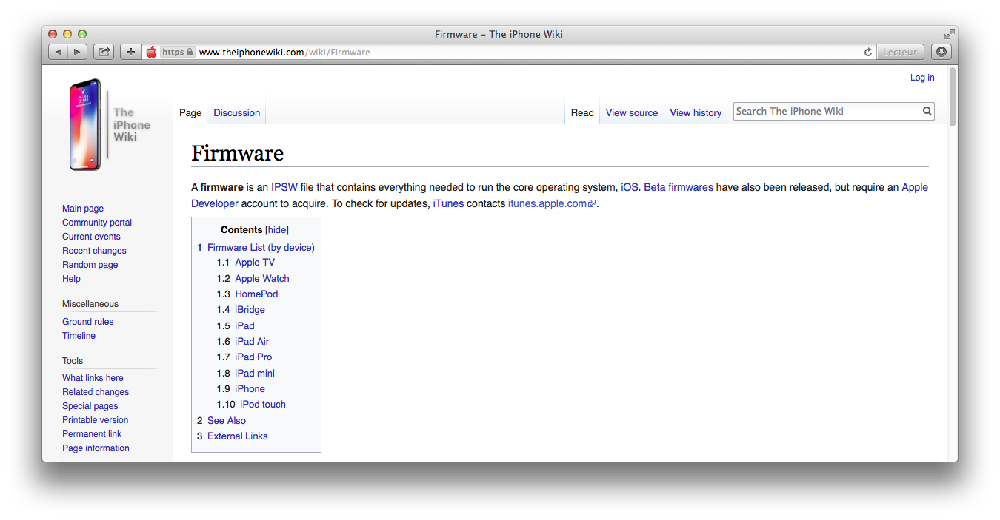
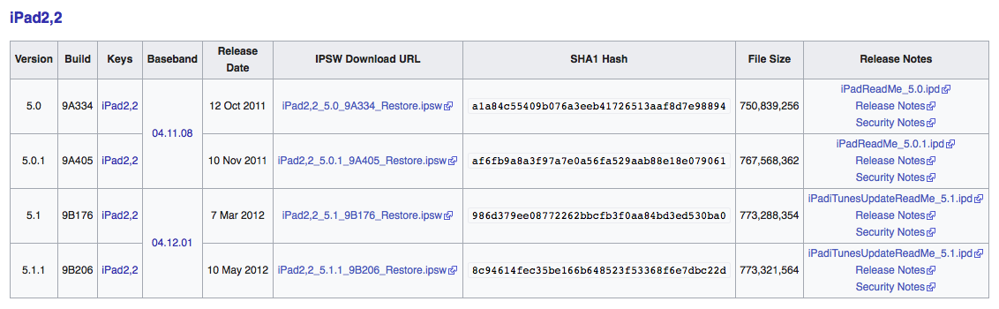
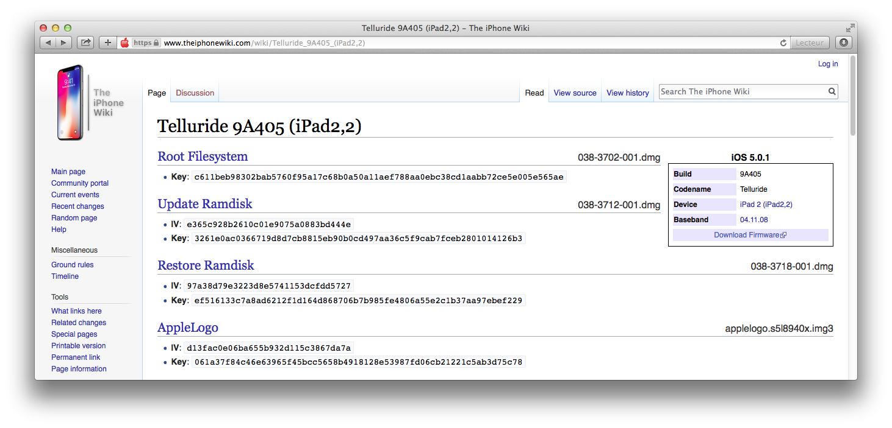
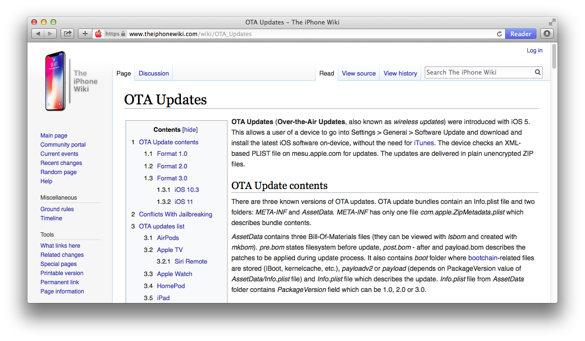
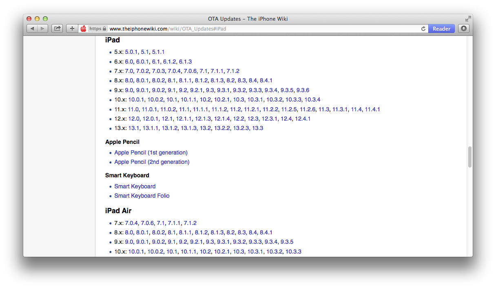
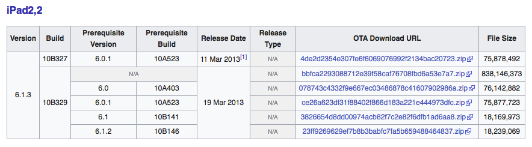
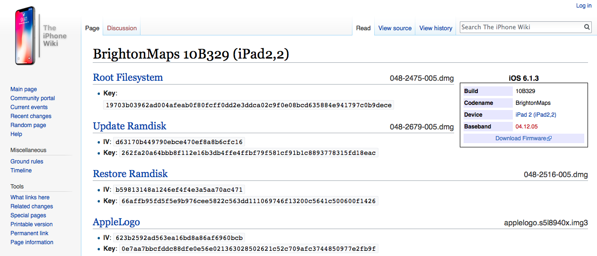
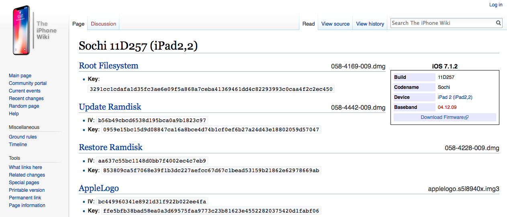
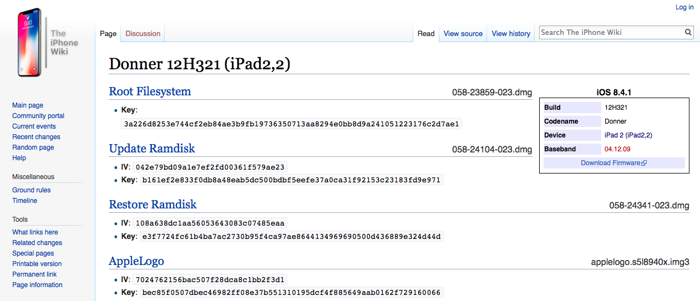
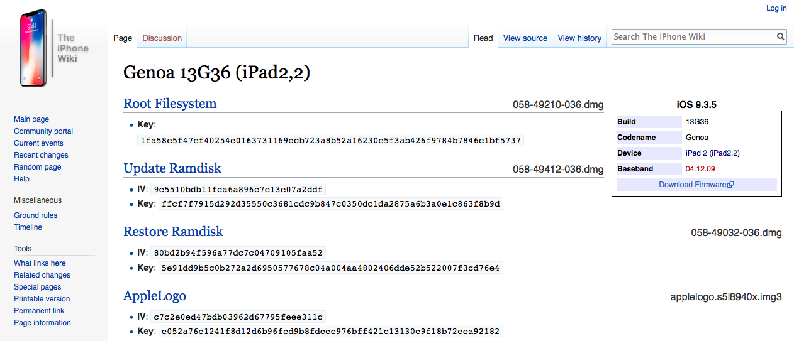

Download iOS firmwares
In order to work on the exploit described in this writeup, a signed vulnerable iBoot must be installed on your device. If this is not the latest available firmware (ex. iOS 5.1.1 for Original iPad and iPod Touch 3rd), be sure you have proper SHSH blobs saved because you will need them to downgrade. Download an iOS 5.x firmware .ipsw file for which SHSH blobs are available (saved or by Apple) from theiphonewiki.
https://www.theiphonewiki.com/wiki/Firmware
Find the desired iOS 5.x firmware. For this writeup, I will use iOS 5.0.1 (9A405) for iPad 2nd (Wi-Fi + Cellular, K94AP). I have SHSH blobs for this firmware as well as the ones for 5.1.1, thanks a lot to @alitek12 who saved them for me during the famous downgrade party!
Click the "Download firmware" button. 
Since November 7th 2019, Apple stopped to sign iOS 6.1.3 restore firmware for A5 devices, complicating a lot custom firmware downgrades. We won't downgrade back to 6.1.3, but we will have to flash a baseband firmware while downgrading back to iOS 5 and the one that comes with that iOS version is signed and usually well compatible.
Fortunately, they are still signing iOS 6.1.3 OTA bundle which will be used as our workaround for this issue.On theiphonewiki, go to the OTA update page, https://www.theiphonewiki.com/wiki/OTA_Updates
 Scroll down to iPad.  Then, find iOS 6.1.3 download section for your device.

Most OTA packages only handle minor upgrades. However, there are some called full OTA which contain way more files and are made to upgrade from a major iOS version to another major iOS version. We can easily recognize full OTA firmwares from minor ones by the bundle file size. It is way more bigger.
The currently signed iOS 6.1.3 OTA firmware bundle is the full one. For iPad 2nd (K94AP) this is bbfca2293088712e39f58caf76708fbd6a53e7a7.zip, which is about 840MB. It contains iOS 6.1.3 complete low-level environment images as well as baseband firmware.
Go back to https://www.theiphonewiki.com/wiki/Firmware page, then download the ipsw of the iOS version you plan to install during the post-exploitation phase if you are certain about it. Otherwise, download any final versions of each major iOS releases for the device you are working on, like I will do for this writeup.
For example, I will download the following firmwares for iPad 2nd (K94AP).- iOS 6.1.3 
- iOS 7.1.2 
- iOS 8.4.1 
- iOS 9.3.5 